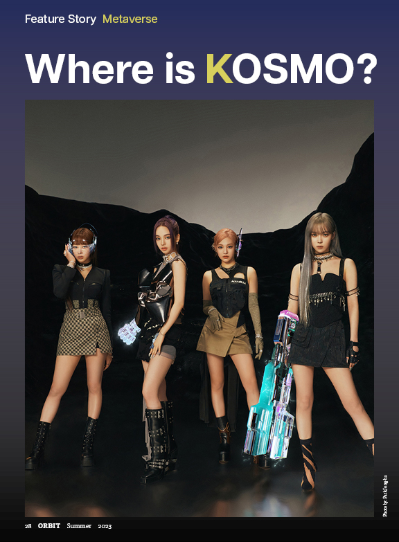
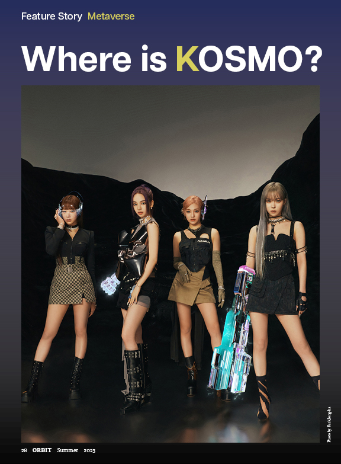

ORBIT Magazine


 

Introduction
This was one of the publication project that I worked on in which I learned to design an effective magazine—its brand, editorial content, and subscription collateral—for a distinctive audience and how to extend reach online. Principles of audience development, editorial direction, and art direction are emphasized through two written and four design projects.
Disclaimer: Photo used in the magazine are owned by SM Entertainment, I do not own/claim rights to them. Proper citations were included inside the magazine.
My Role
Editorial director, art director, website mockup
Team
Individual Project
Tool
Adobe Indesign, Photoshop, Illustrator, Figma
Duration
May 18 - June 23 (1 month)
Magazine design rationale
For the Orbit magazine I wanted something futuristic and technology related, thus for the cover image I had picked out an image that gives off the metaverse vibe while relating to the word “orbit” as the girl in the image is seemingly orbited by the metal pieces. For the tagline I had selected to be “Unveiling the Future of Entertainment and Beyond” as this will be a magazine that will cover different topics regarding technology within entertainment.
For the typography it is kept minimalistic in order to make the cover not as clutter with text, and instead is focused mainly on the attraction of the cover image. I had treated the image through Adobe Photoshop in order for all of the typography to show clearly, that includes blurring, burning, rotating, and enlarging the image. The title of this magazine is clearly seen to introduce us to the metaverse, I wanted to use the colour contrast to make the “metaverse” pop out, and have used similar colours throughout the cover to make everything seamless.
Brainstorming for the Styleguide
For the typeface and fonts I have gather a variety of different options as seen on the left image. For the theme of my magazine I ended up choosing the typefaces that are rigid and easy to read. On the right is my final style guide which contains the typeface I picked for the logo, headings, and body text. Also the colour palette throughout the magazine.

The flatplan is used to plan out where each of the sections and advertisements would go, for this magazine I've placed the features in the middle of the magazine which marks it as the main topic.
Brand Ideation
For the Orbit Magazine I wanted to target an audience of curious young individual who have a strong interests in both technology and the entertainment industry thus I focused my topic of the feature to be singer and artists who utilize futuristic technology and aesthetics within their form of art.
Reflection
This fruitful project that lasted one month, I've learned a lot and the results were more than what I have initially expected as this was my first time creating a magazine from scratch. I received great positive feedback from the professor and classmates, and ended with a great final grade for the project. I am very glad I was able to pull off the amount of work in merely one month, and very thankful towards the professor for their advice and guidance during the process. If I were to improve for the next time, I would like to go more in depth with my layout by having more variety, and designing a personalized logo for the magazine.